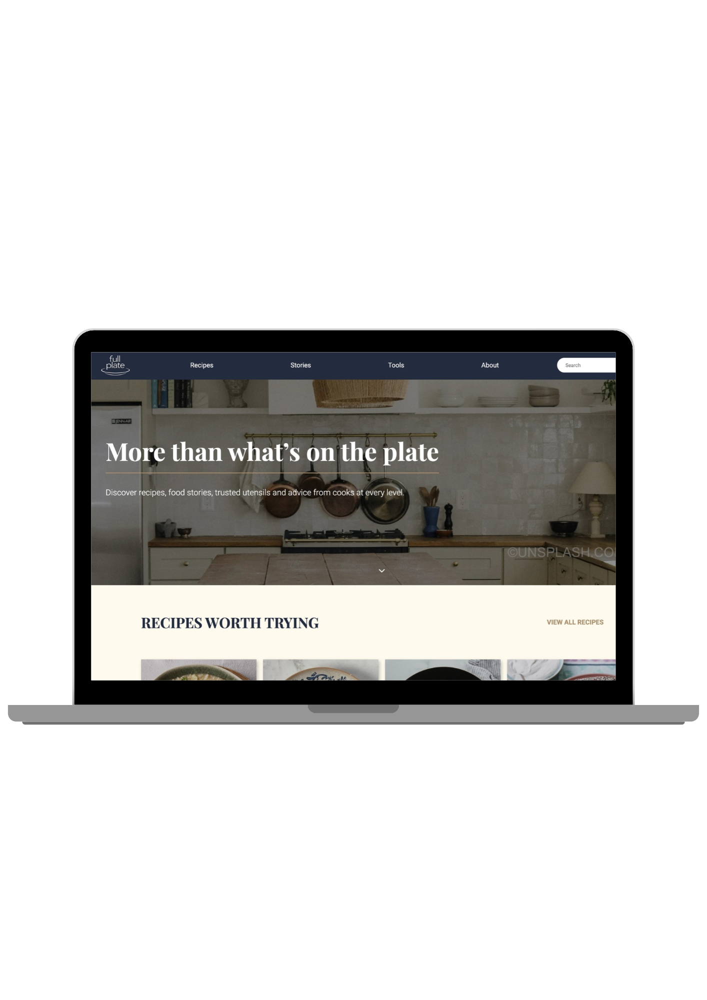

Full Plate
Et madunivers med opskrifter, madhistorier og anbefalinger af køkkenredskaber. Full Plate blev udviklet som et proof of concept. Projektet gik fra en udleveret case og personaer til en dynamisk WordPress-løsning med fokus på overskueligt indhold og sammenhæng mellem opskrifter, historier og redskaber.
Vi tog udgangspunkt i at omsætte casens krav til design og udvikling. Vi byggede et skræddersyet WordPress-tema med HTML, CSS, JavaScript og PHP og brugte Custom Post Types og ACF til at strukturere indholdet, så det kunne oprettes og redigeres i WordPress.

copyright: www.bbc.co.uk/food/recipes
Processen
Målgrupper og indsigter
Platformen skulle henvende sig til tre brugergrupper med forskellig erfaring i køkkenet: professionelle kokke, amatørkokke og hjemmekokke. Hver gruppe var repræsenteret af en udleveret persona, som vi brugte til at forstå, hvad de forskellige brugere havde brug for.
Mads er chefkok på en Michelinrestaurant og vil gerne dele sin viden og blive set som et brand. Det understøttede madhistorierne som en indholdstype, hvor kokke kan fortælle om retter og madkultur fra hele verden. Han går også meget op i gode køkkenredskaber, hvilket gav mening at koble til opskrifterne.
Catherine er amatørkok med en baggrund i kemi og går op i, at ingredienser, mængder og teknikker er helt præcise. Det betød, at opskrifterne skulle have en fast struktur med ingredienser, enheder og fremgangsmåde, så oplysningerne var lette at følge og stole på.
Anna er hjemmekok og ser opskrifter som inspiration. For hende skal maden se rigtig ud, og hun laver mad til familie og venner. Store billeder og oplysninger som tid, sværhedsgrad og antal portioner skulle derfor hjælpe hende med hurtigt at finde en ret, der passede til hende.
Content sitemap
Med udgangspunkt i casen udarbejdede vi et content sitemap, hvor vi fastlagde indholdet på de enkelte sider og forbindelserne mellem dem. Her blev det tydeligt, at opskrifterne skulle være centrale, men også kunne forbindes med madhistorier, tips og køkkenredskaber.
Vi skelnede mellem oversigtssider, hvor brugeren skulle kunne finde og vurdere flere muligheder, og enkeltsider med plads til det uddybende indhold. På en opskriftsside definerede vi blandt andet titel, billede, forfatter, tid, sværhedsgrad, portioner, ingredienser og fremgangsmåde. Billedet viser Recipe Archive og Single Recipe som et eksempel på, hvordan vi arbejdede med indholdet.
Det fik betydning senere i udviklingen, fordi vi allerede havde taget stilling til, hvilke oplysninger der skulle kunne oprettes i WordPress. Sitemappet blev dermed både et udgangspunkt for vores wireframes og for arbejdet med indholdstyper, ACF-felter og relationer.
ERD
Som en del af opgaven skulle vi lave et ER-diagram til det mini-CMS, vi arbejdede med i teknologiundervisningen. Formålet var at vise, at vi forstod, hvordan data kan fordeles i tabeller og forbindes gennem relationer.
Diagrammet omfattede blandt andet brugere, opskrifter, ingredienser, måleenheder og historier. En ingrediens kan indgå i flere opskrifter, men med forskellige mængder. Derfor blev opskrifter og ingredienser forbundet gennem en mellemtabel med oplysninger om blandt andet mængde, enhed og rækkefølge.
ER-diagrammet er ikke den database, Full Plate bygger på. Det var en separat øvelse i datarelationer og har ikke noget med WordPress' database at gøre. I selve løsningen brugte vi WordPress' egen databasestruktur og organiserede vores indhold med Custom Post Types og ACF.
Wireframes
Da vi havde fået overblik over, hvilket indhold vi ønskede på alle siderne, gik vi videre til at udvikle wireframes. Her arbejdede vi med, hvordan indholdet skulle placeres, så brugeren hurtigt kunne få overblik. Oversigtssiderne blev bygget op med kort, hvor billeder og korte oplysninger skulle gøre det nemt at vurdere indholdet, inden man klikkede videre.
På opskriftssiden blev tid, sværhedsgrad og antal portioner placeret tæt på introduktionen. Ingredienser og fremgangsmåde fik hver deres område, så de var lette at skelne fra hinanden under madlavningen.
Vi planlagde også forbindelser mellem indholdstyperne. En opskrift kunne eksempelvis føre videre til relevante køkkenredskaber, mens en madhistorie kunne inspirere til en bestemt ret. Det skulle give brugeren en naturlig vej videre gennem websitet.
Styletiles
Før vi gik i gang med mockups, samlede vi den visuelle stil i en styletile med logo, typografi og farver. Casen lagde vægt på et eksklusivt udtryk, så vi ville have en stil, der føltes rolig og gennemarbejdet og samtidig lod madbillederne være i fokus.
Farvepaletten bestod af mørk navy, en lys gråblå, en varm off-white og en camelfarve. Navy og off-white gav kontrast og ro, mens camel tilføjede varme og blev brugt til logoet og små detaljer. Vi lavede logoet i både en lys og en mørk version, så det kunne bruges på forskellige baggrunde.
For at teste farverne i praksis afprøvede vi flere versioner af headeren med forskellige kombinationer af baggrund, tekst og logo. Det gjorde det lettere at vurdere kontrasten og vælge den løsning, der passede bedst til platformens udtryk, inden vi brugte stilen i vores mockups.
Mockups
I vores mockups blev wireframes videreudviklet med farver, typografi og billeder. Vi valgte en lys, varm baggrund kombineret med mørkeblå elementer, som blandt andet blev brugt i navigationen og til at fremhæve udvalgte historier og tips.
Store billeder fik en central rolle, da maden skulle vække interesse og give brugeren lyst til at undersøge opskrifterne. Overskrifter med seriffer blev kombineret med en enkel brødtekst for at give siden et simpelt udtryk og samtidig holde de praktiske oplysninger lette at læse.
Kort, knapper og informationsfelter fulgte samme opbygning på tværs af siderne. Det gav sammenhæng i designet og et konkret udgangspunkt for de skabeloner, vi senere udviklede i WordPress.
WordPress-tema og PHP
Som en del af udviklingen byggede vi et skræddersyet WordPress-tema, hvor PHP blev anvendt til at hente indhold dynamisk og vise det i fælles skabeloner. Vi arbejdede med single-skabeloner til de enkelte opskrifter, madhistorier og køkkenredskaber samt archive-skabeloner til oversigtssiderne. Det betød, at nye opskrifter kunne vises i det samme layout, uden at vi skulle kode en ny side hver gang.
Opskrifter, madhistorier og køkkenredskaber blev registreret som separate Custom Post Types med PHP. Det gav hver indholdstype sit eget område i WordPress’ administrationspanel, hvor indholdet kunne oprettes og redigeres. Da hver type havde en række fælles oplysninger, brugte vi ACF til at strukturere dem. En opskrift havde eksempelvis felter til tid, sværhedsgrad, portioner, ingredienser og fremgangsmåde, som blev vist på faste pladser i skabelonen.
Vi arbejdede desuden med relationer mellem indholdet. På en opskrift kunne der vises tilknyttede køkkenredskaber, mens en redskabsside kunne vise de opskrifter, hvor redskabet blev brugt. Med PHP og WordPress-forespørgsler kunne vi hente det relaterede indhold dynamisk og give brugeren mulighed for at gå videre mellem opskrifter og redskaber.
I WordPress’ administrationspanel oprettede vi brugere og tildelte dem rollerne Professional, Amateur og Home Cook med forskellige rettigheder. Roller og rettigheder bestemte, hvad den enkelte bruger havde adgang til at gøre i systemet. Rollen blev desuden vist sammen med forfatterens navn på hjemmesiden, så man kunne se, hvilken madlavningsbaggrund personen bag indholdet havde.
Kode
Vi startede med at opbygge siderne statisk med HTML og CSS for at omsætte vores mockups til et fungerende layout. Herefter blev siderne gjort dynamiske med WordPress og PHP. Forsiden blev bygget i front-page.php, hvor vi brugte WP_Query til at hente indhold fra alle tre indholdstyper: de fire nyeste opskrifter, den nyeste madhistorie og to køkkenredskaber. Når der blev oprettet nyt indhold i WordPress, blev forsiden derfor opdateret automatisk.
På opskriftskortene hentede vi titel, billede og forfatter fra WordPress og tilberedningstiden fra et ACF-felt. Ved madhistorien tjekkede PHP forfatterens rolle, så der stod ved navnet, om historien var skrevet af en hjemmekok, en amatørkok eller en professionel kok. Efter hver forespørgsel nulstillede vi med wp_reset_postdata(), så de næste dele af siden hentede det rigtige indhold.
Undervejs opdelte vi også koden i genbrugelige dele. Header og footer fik hver deres PHP-fil, og kortene på oversigtssiderne blev samlet i template-parts, så vi kunne rette et kort ét sted og få ændringen vist alle steder.
JavaScript blev blandt andet anvendt til søgefeltet, som kunne åbnes fra navigationen eller med en tastaturgenvej og lukkes med Escape. GitHub blev brugt til versionsstyring og til at samle gruppens kode.